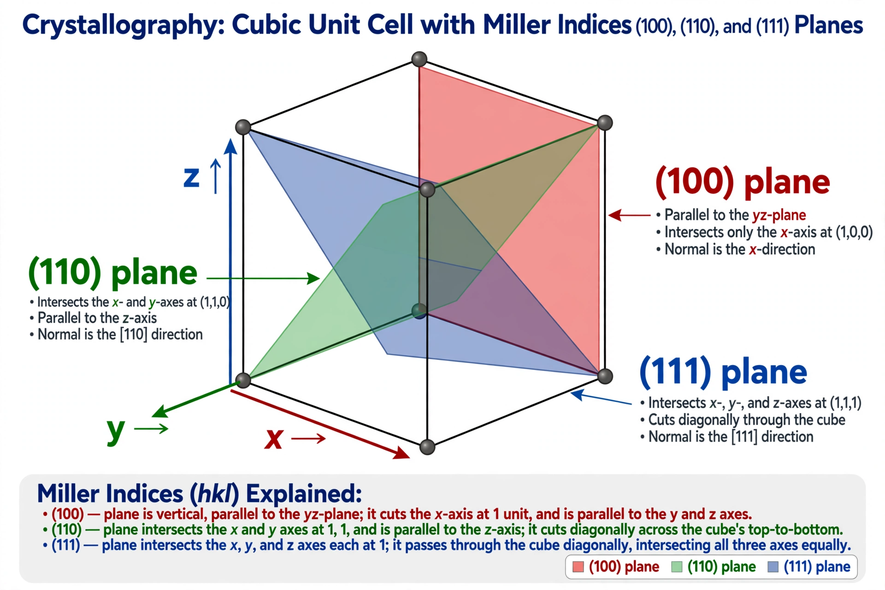

| Miller index | |
|---|---|
 | |
| Named after | William Hallowes Miller |
| Field | Crystallography |
| Notation | (hkl) planes; [hkl] directions; {hkl} families |
Miller indices form a notation system in crystallography for lattice planes in crystal (Bravais) lattices, introduced by William Hallowes Miller in 1839. A family of lattice planes is determined by three integers h, k, and l, the Miller indices, written (hkl).
To find the Miller indices of a plane: determine the intercepts of the plane with the three crystallographic axes (in units of the lattice constants); take the reciprocals of these intercepts; and clear fractions to obtain the smallest set of integers. A plane parallel to an axis intercepts it at infinity, giving an index of zero. Negative intercepts are written with a bar over the number, e.g. (h̄kl). For example, the faces of a cube are of the family {100}; the octahedral planes are {111}.
Square brackets [hkl] denote a direction in the basis of the direct lattice vectors; angle brackets ⟨hkl⟩ denote a family of equivalent directions. Braces {hkl} denote a family of planes equivalent by symmetry. In cubic crystals, the direction [hkl] is perpendicular to the plane (hkl), a convenience not generally true in other crystal systems.
For hexagonal and rhombohedral lattices, the Miller–Bravais system uses four indices (hkil), where i = −(h + k), reflecting the threefold symmetry of the basal plane.
Miller indices are essential in X-ray diffraction (where the indices label diffraction peaks, connected to Bragg's law), in describing crystal faces, cleavage planes, slip systems in plasticity, and the orientation of semiconductor wafers (commonly (100) or (111) silicon).
See also: Bravais lattice; X-ray crystallography; Bragg's law; Crystal structure.